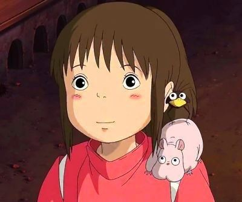
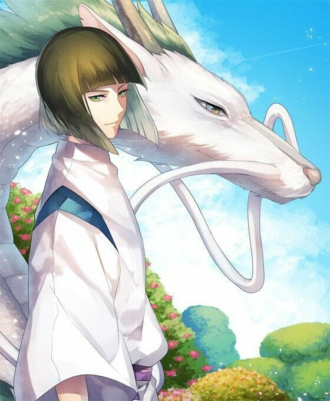
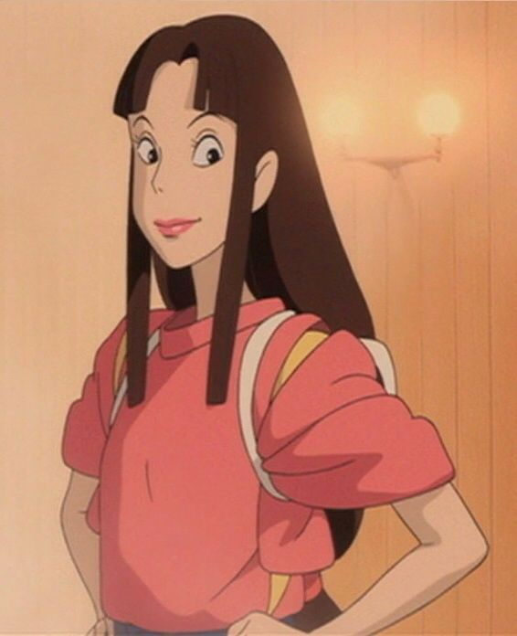

Viagem de Chihiro
Viagem de Chihiro é um anime que pra mim é MUITO INCRIVEL, sua arte mesmo sendo antiga é muito melhor do que varios animes de hoje;
Sua história é linda, tem varias teorias sobre esse anime, tipo, esse anime faz você pensar sobre, porque mesmo sendo um anime bem cuidado
em cada detalhe, é um anime que você tem que prestar atenção na história e com isso ele te prende querendo cada vez mais sobre o anime.
E Viagem de Chihiro foi o unico anime (até o momento que estou escrevendo) a ganhar um oscar de melhor animação.
Estudios Ghibli
Studio Ghibli,criador de Viagem de Chihito, pra mim se não for o melhor é um dos melhores estúdios de anime do mundo,
fez grandes obras como: Meu amigo Totoro, Ponyo (que meu amigo, que filme lindo), Sussurros do coração, O Castelo no céu,
Serviço de entrga da Kiki, entre outros incriveis.
O Studio ghibli, traz cada traço, cada arte, cada detalhe em seus filmes/animes que faz você até se emocionar com a história,
e esse Stidio foi o unico a conquistar um Oscar para os animes com a grande história de Viagem de Chihiro.
Sinopse
A História conta sobre uma guria chamada Chihiro, que ao viajar com seus país de carro, acabam parando em frente ao um túnel que do outro lado encontra-se uma cidadezinha,
os pais de chihiro acabam querendo entrar para tirar umas fotos e conhecer o local, ao chegar na cidadezinha, encontram uma cidadezinha vazia, sem ninguem,
até que os pais de Chihiro encontram um local com muita comida e resolvem comer, Chihiro então resolve dar uma olhada pela cidade, mas ao escurecer,
ela começa a ver coisas que se parecem com fantasmas pela cidadezinha, ao chegar em seus pais ela percebe que seus pais viraram porcos e ela não sabia mais o que fazer
porque ao tentar retornar percebeu que a cidadezinha tinha se tornado muito diferente e por onde ela havia entrado estava cheio de água e não tinha como retornar.
Chihiro então encontra seu velho amigo Haku, que ao encontrar ele fica muito feliz e confusa, então Haku e Chihiro terão que encontrar alguma maneira para salvar os pais de chihiro e voltar para casa.
Personagens

Chihiro(A Heroína)
Esta é a personagem principal, seu nome é Chihiro Ogino

Haku(O Dragão Protetor)
Este é Haku, Melhor amigo da Chihiro e que ainda acho que é algo mais

Lin(Funcionária de Yubaba)
Lin, ela acaba se tornando grande amiga da Chihiro e a tenta ajudar
(como se fosse uma irmã mais velha dela)

Kamaji(O Vovô)
kamaji, bem trabalhador e até responsável, mas tambem bem divertido
como se fosse um avô para Chihiro que a tenta ajudar ao máximo que ele concegue

Kaonashi(The Mistery)
ainda muito misterioso, Kaonashi é um ser que acaba seguindo e observando Chihiro

Yubaba(A Chefe)
Yubaba, Meio brava e bem protetora com seu filho, ela é a chefe de todos que trabalham pra ela,
e pra alguem ter conhecimento e não ser apenas um humano ou desconhecido, tem que convenser ela
que você pode ser util e assinar um contrato para trabalhar para ela

Boh(filho da Yubaba)
Boh, é grande filho de Yubaba, ele só quer brincar, mas se você não aceitar brincar com ele,
ele vai chorar Muito Alto pela sua mãe e querer correr atras de você